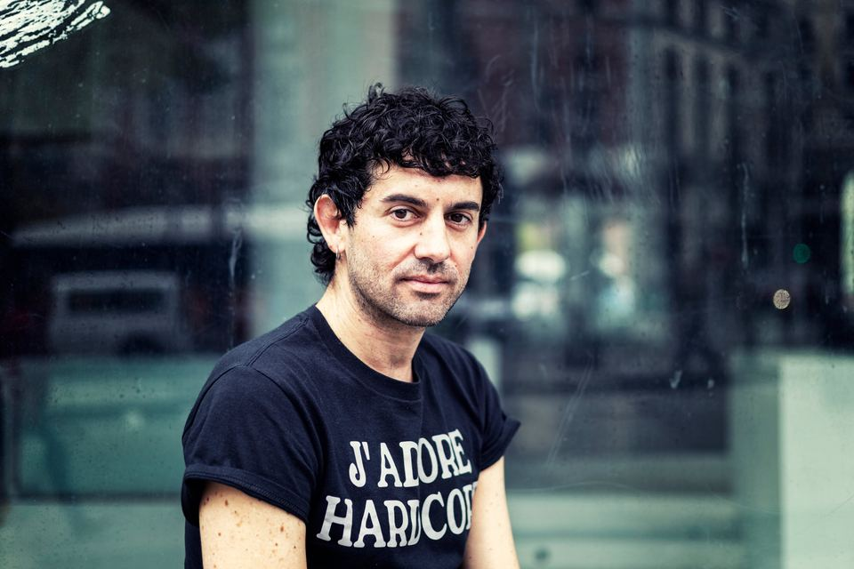

Alberto Cortés, el creador escénico de culto que encarna a Lorca: “Hay que tener cuidado para no mercantilizar los iconos”

El autor, director y ‘performer’ presenta sus últimos trabajos en el Festival de Otoño antes de emprender en París una gira por Europa
A Alberto Cortés el papel de Federico García Lorca le llegó por Instagram. La agencia que organizaba el casting de La bola negra le envió una invitación para presentarse a unas pruebas, sin especificar el personaje. Hasta entonces solo había hecho teatro y ni siquiera conocía a Los Javis , directores del fenómeno cinematográfico del año, pero Cortés es un creador omnívoro y queer , en el sentido más amplio del término, que no admite cánones vitales ni artísticos. Se presentó y fue elegido. “Rapidísimo. Un regalazo”, dice todavía sorprendido. Desde entonces, el público de culto que ha atesorado en casi dos décadas sobre los escenarios lo venera todavía más y seguramente ha ganado algún…